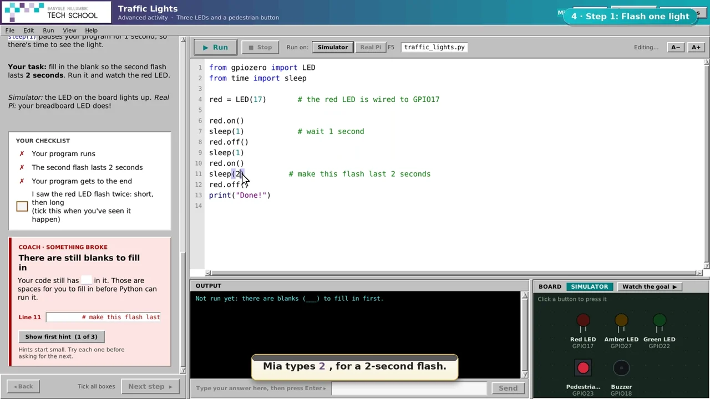

A bin with a brain.
Turn a distance reading into a Smart Bin. Explore the idea in the walkthrough.
↗ In the CircuitPathways release appA LITTLE CURIOSITY GOES A LONG WAY
From “what does this do?” to “I made that.”
Meet two playful ways to learn code, build confidence,
and make something happen.
Where would you like to explore?
01 / PICK YOUR ADVENTURE
No experience? Perfect.
Choose a starting point. We’ll take it
one little discovery at a time.
02 / LITTLE STEPS, REAL CONFIDENCE
There’s more than one way to learn. Explore the support that helps students
go from following along to finding their own way.
03 / LESS WATCHING. MORE DOING.
Three lights. A few lines of Python. One very satisfying first “I did that.”
The Wiring Wizard breaks a circuit into small connections. You meet each part before you start coding.
Tap each connection to build your first circuit.
Try a support level. Watch the instructions change.
Stuck is just a step on the way. Ask for a nudge.
Press Run and watch your traffic lights cycle.
A simplified website taster inspired by the apps. The full programs include guided lessons, code editing, progress saving and real hardware.
04 / THE REAL THING, UP CLOSE
Peek inside the apps. Follow the callouts
to see how the experience supports
students at every stage.

05 / THIS IS ONLY THE BEGINNING
Keep this website simple. Take the bigger adventures into the apps.
Turn a distance reading into a Smart Bin. Explore the idea in the walkthrough.
↗ In the CircuitPathways release appExplore camera activities, collect examples and try your own ideas.
↗ In the CircuitPathways release appTake your curiosity further with Free Play and projects in the full programs.
↗ In the CircuitPathways release appExplore the full CircuitPathways programs, lessons and release downloads.
Every “I can’t code”
starts somewhere.